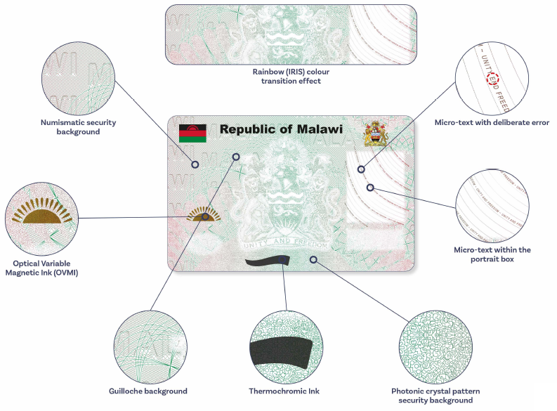
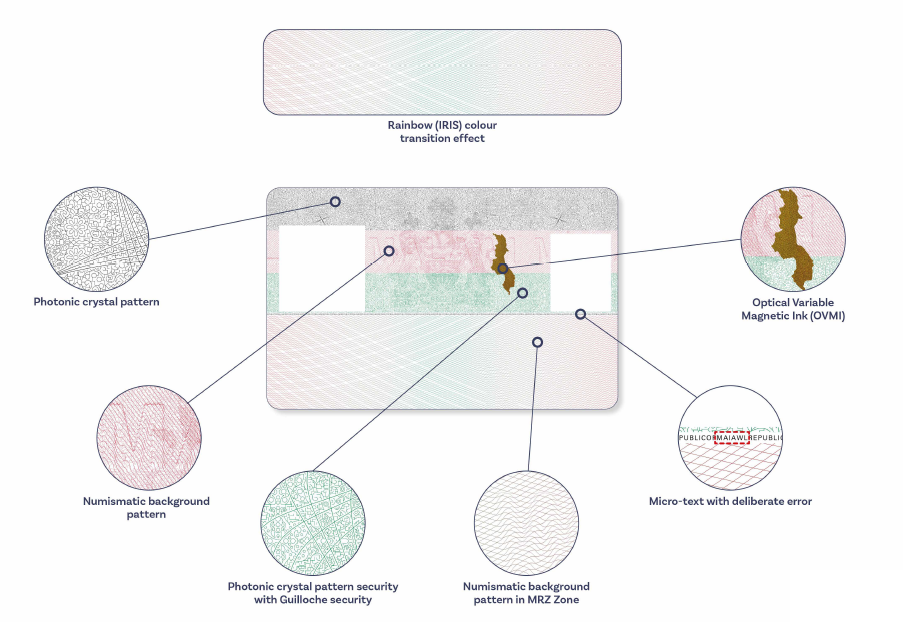
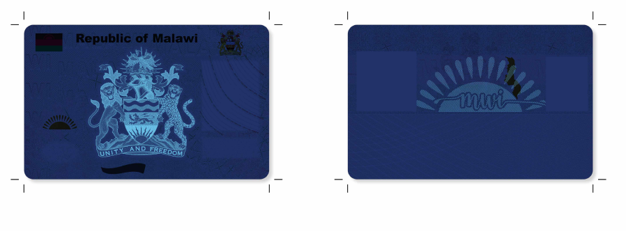
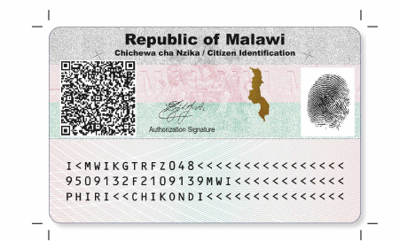
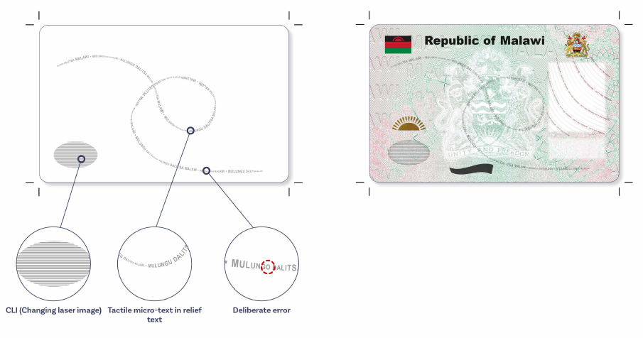

The images show the blank card, front and back, and the personalized card, front and back, with the security features marked. They are referred to in System Architecture Section 4.7 and in Technical Responsiveness Checklist row 3.4.5.1. The final card layout and artwork are agreed with NRB in the joint redesign described in Preliminary Project Plan Section 2.4.




